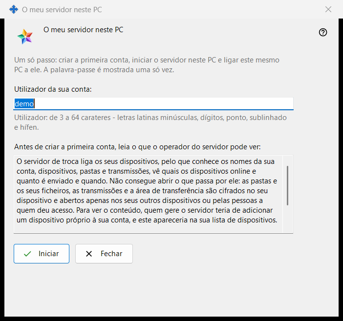
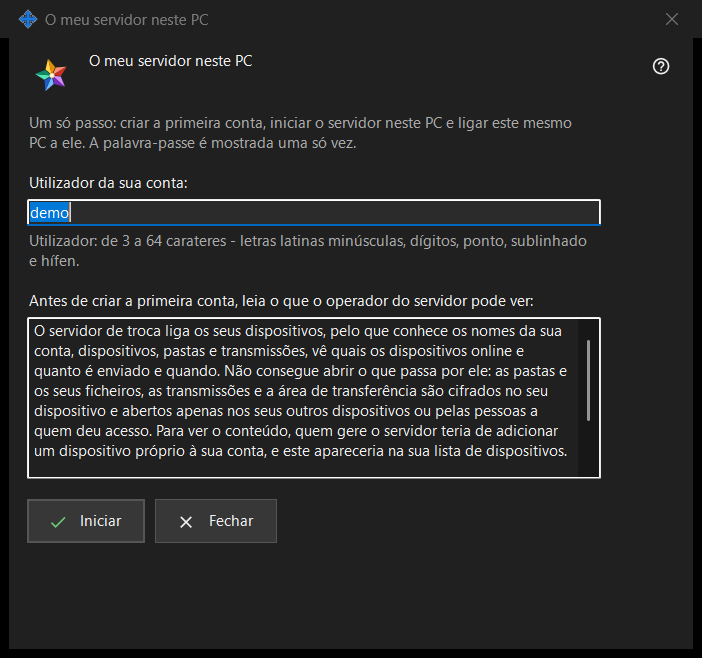

O meu servidor neste PC
Finalidade
Configura de uma só vez um Media Exchange Server pessoal neste PC: cria a primeira conta, inicia o servidor e liga a ele este mesmo PC. Abre-se a partir do botão «Usar este PC como o meu servidor..» da página Media Exchange Server das definições do Share Manager, que só aparece enquanto não houver nenhum servidor configurado neste PC.


Nesta ordem
- Verifique o utilizador sugerido, tirado do seu nome de utilizador do Windows, ou escreva o seu.
- Leia a declaração sobre o que o operador pode ver.
- Clique em «Iniciar» e aguarde os quatro passos.
- Copie a palavra-passe de imediato e, depois, a impressão digital ou a cadeia de ligação para os seus outros dispositivos.
- Clique em «Fechar».
Os elementos
Utilizador
«Utilizador da sua conta:» aceita de 3 a 64 caracteres: letras latinas minúsculas, dígitos, ponto, sublinhado e hífen; as maiúsculas são convertidas em minúsculas. A indicação por baixo do campo passa à cor de aviso enquanto o texto não puder ser um utilizador, e «Iniciar» não faz nada até que o possa ser.
O que o operador pode ver
A caixa só de leitura por baixo de «Antes de criar a primeira conta, leia o que o operador do servidor pode ver:» enumera o que um operador do servidor pode ver de contas, dispositivos, pastas, transmissões e da área de transferência, o que o servidor não consegue ler e durante quantos dias os registos são guardados. No seu próprio servidor, o operador é você.
Passos e falhas
«Iniciar» executa quatro passos e indica o atual: «A criar a conta..», «A iniciar o servidor..», «A verificar o certificado..» e «A ligar este PC..». Entretanto, o utilizador fica bloqueado e a janela não pode ser fechada. Se nenhuma conta foi criada, uma frase explica o motivo, por exemplo «Essa conta já existe - escolha outro utilizador.»; corrija o utilizador e clique de novo em «Iniciar».
Resultado e endereços
Em caso de êxito, a janela diz «Concluído: o servidor está em execução, a conta foi criada e este PC está ligado a ela.» e lista «Endereço para este PC:», «Endereço para os outros dispositivos:» (que mostra «não definido - indique-o nas definições do servidor de troca» até esse endereço ser definido), «Utilizador:», «Palavra-passe (mostrada uma só vez):» e «Impressão digital do certificado:». Depois de definido o endereço para os outros dispositivos, acrescenta-se «Cadeia de ligação:». Se o servidor não arrancou, a conta existe na mesma e a sua palavra-passe é mostrada uma só vez mais abaixo.
Palavra-passe e cópia
A palavra-passe está mascarada. «Mostrar a palavra-passe» revela-a; «Copiar palavra-passe» coloca-a na área de transferência pela via protegida, que a mantém fora do histórico da área de transferência do Windows e da área de transferência na nuvem. A janela mostra-a só desta vez, a menos que «Guardar as palavras-passe das contas neste PC» esteja ativado. «Copiar impressão digital» e «Copiar a cadeia» são cópias simples: nenhuma contém uma palavra-passe. Os outros dispositivos precisam do endereço, do utilizador, da palavra-passe e da impressão digital, que comparam na primeira ligação.
Fecho
Se a palavra-passe não foi copiada, nem mostrada, nem guardada neste PC, «Fechar» pergunta «Fechar sem copiar a palavra-passe?» com Não como resposta predefinida, porque a palavra-passe não pode ser mostrada de novo, apenas redefinida.
Definições do gestor · Definições de partilha SFTP · Definições do servidor de troca